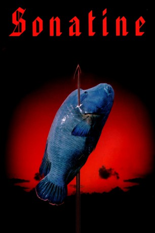

#8142 Sonatine
 gesehen am 01.02.2018
gesehen am 01.02.2018
 
 IMDB-Wertung: 7.6 / 10
IMDB-Wertung: 7.6 / 10  Tomatometer: 88
Tomatometer: 88  Metascore: 0
Metascore: 0 
Unterwelt-Bigshot Murakawa soll im Auftrag seines Bosses im fernen Okinawa geschäftliche Unstimmigkeiten klären. Dort liegen zwei verfeindete Familien im Streit, eine Partei davon pflegt beste Kontakte zur Yakuza-Familie in Tokio und bittet um Hilfe durch die Mutterorganisation. Scheinbar. Begleitet von einer Truppe unmotivierter Anfänger reist Murakawa nach Okinawa und gerät unversehens zwischen die Fronten intriganter Unterweltclans. Ein blutiges und offensichtlich auswegloses Abenteuer nimmt seinen Lauf.
Jahr: 1993
Dauer: 93 Minuten
FSK: 18
Land: Japan Studio: Rapid Eye MoviesTonspuren: AAC5.1 - ,
Untertitel: Deutsch,
Auflösung: 720p (1280x690) Größe: 3584 MB
Genre: Action, Thriller, Drama, Komödie, Krimi, Liebe
Regisseur:  Takeshi Kitano
Takeshi Kitano
Drehbuch: Takeshi Kitano
Soundtrack: Joe Hisaishi
Darsteller:
 Takeshi Kitano als Aniki Murakawa
Takeshi Kitano als Aniki Murakawa Tetsu Watanabe als Uechi
Tetsu Watanabe als Uechi- Ren Osugi als Katagiri
- Eiji Minakata als The Hit Man
- Bob Gunter als Gangster
- Rome Kanda als Gangster
- Aya Kokumai als Miyuki
- Masanobu Katsumura als Ryoji
- Susumu Terajima als Ken
- Tonbo Zushi als Kitajima
- Ken'ichi Yajima als Takahashi
- Hôka Kinoshita als A member of kitajima-gumi
- Koji Koike als Okinawa Boss
- Kôta Mizumori als
- Yoshiyuki Morishita als Maeda (knife attacker)
- Yuuki Natsusaka als Murakawa-gumi kumiin
- Gregory Marshall Smith als Assassin's lookout
 Kanji Tsuda als
Kanji Tsuda als - Kanta Yamazaki als Waiter
Datei: X:\FSK18-Eastern\Sonatine (1993, FSK18, 1280x690).mkv seit 31.01.2018
Festplatte: FSK18
 Es gibt insgesamt 102 Filme in der Gruppe 'FSK18-Eastern'
Es gibt insgesamt 102 Filme in der Gruppe 'FSK18-Eastern'